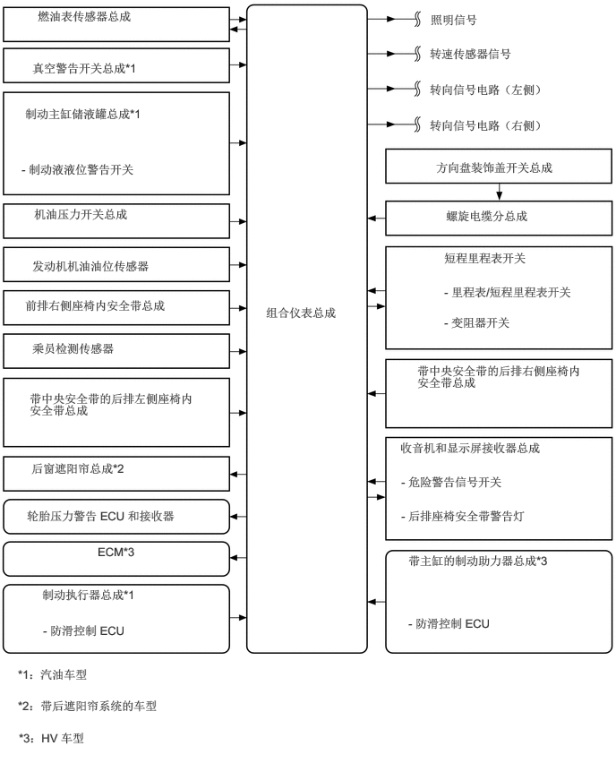

0.313,5.917 2.885,6.292
2.563,0.365
10
false
轮胎压力警告 ECU 和接收器
0.438,0.104 2.417,0.448
1.969,0.333
10
false
燃油表传感器总成
0.375,0.708 2.771,1.052
2.385,0.333
10
false
真空警告开关总成*1
0.208,7.76 1.667,8.083
1.448,0.313
10
false
*1：汽油车型
5.167,2.917 6.646,3.177
1.469,0.25
10
false
短程里程表开关
5.167,3.313 7,3.677
1.823,0.354
10
false
- 里程表/短程里程表开关
5.167,3.667 6.385,4.021
1.208,0.344
10
false
- 变阻器开关
0.396,2.406 2.531,2.729
2.125,0.313
10
false
机油压力开关总成
0.375,3.01 1.896,3.354
1.51,0.333
10
false
发动机机油油位传感器
5.073,1.865 7.031,2.198
1.948,0.323
10
false
方向盘装饰盖开关总成
5.188,2.427 6.906,2.771
1.708,0.333
10
false
螺旋电缆分总成
5.01,0.146 6.344,0.458
1.323,0.302
10
false
照明信号
5,0.542 6.448,0.844
1.438,0.292
10
false
转速传感器信号
5,0.958 6.604,1.281
1.594,0.313
10
false
转向信号电路（左侧）
5,1.375 6.604,1.698
1.594,0.313
10
false
转向信号电路（右侧）
4.656,5.125 7.094,5.458
2.427,0.323
10
false
收音机和显示屏接收器总成
4.667,5.521 6.719,5.844
2.042,0.313
10
false
- 危险警告信号开关
4.667,5.917 6.677,6.24
2,0.313
10
false
- 后排座椅安全带警告灯
1.135,6.333 1.75,6.604
0.604,0.26
10
false
ECM*3
0.365,5.365 2.521,5.688
2.146,0.313
10
false
后窗遮阳帘总成*2
0.208,8.125 5.719,8.333
5.5,0.198
10
false
*2：带后遮阳帘系统的车型
0.219,8.5 2.219,8.708
1.99,0.198
10
false
*3：HV 车型
0.292,1.24 2.292,1.833
1.99,0.583
10
false
制动主缸储液罐总成*1
0.25,1.885 2.458,2.26
2.198,0.365
10
false
- 制动液液位警告开关
0.49,6.833 2.26,7.177
1.76,0.333
10
false
制动执行器总成*1
0.5,7.25 1.76,7.573
1.25,0.313
10
false
- 防滑控制 ECU
4.75,6.438 6.938,6.844
2.177,0.396
10
false
带主缸的制动助力器总成*3
4.75,7.167 6.01,7.49
1.25,0.313
10
false
- 防滑控制 ECU
4.854,4.229 6.844,4.625
1.979,0.385
10
false
带中央安全带的后排右侧座椅内安全带总成
0.344,4.552 2.354,5.021
2,0.458
10
false
带中央安全带的后排左侧座椅内安全带总成
0.292,3.469 2.51,3.75
2.208,0.271
10
false
前排右侧座椅内安全带总成
0.375,3.969 2.208,4.271
1.823,0.292
10
false
乘员检测传感器
3.094,3.552 4.281,4.125
1.177,0.563
10
false
组合仪表总成